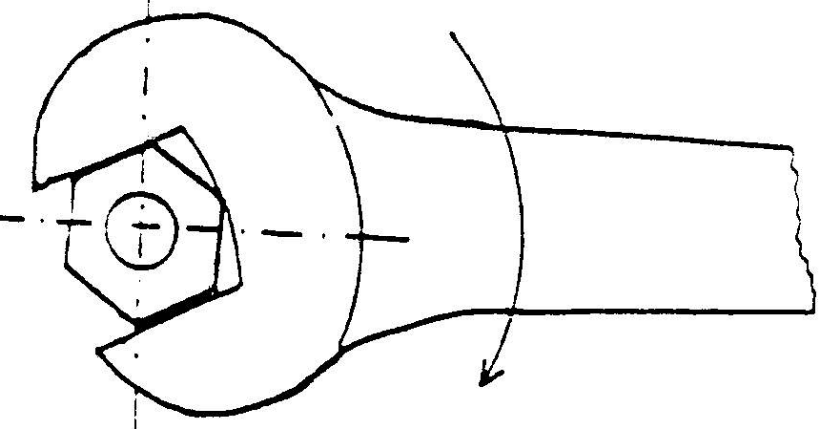
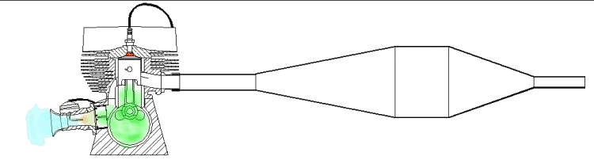
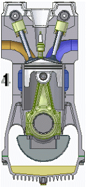

SIKLUS MOTOR BENSIN
Siklus Otto adalah siklus termodinamika yang paling banyak digunakan dalam kehidupan manusia. Mobil dan sepeda motor berbahan bakar bensin (Petrol Fuel) adalah contoh penerapan dari sebuah siklus Otto. Mesin ini di temukan oleh Nichollus Otto.

Gambar Siklus Otto
Fluida kerja dianggap sebagai gas ideal dengan kalor spesifik yang konstan.
- Langkah hisap (0-1) merupakan proses tekanan konstan.
- Langkah kompresi (1-2) ialah proses isentropik.
- Proses pembakaran volume-konstan (2-3) dianggap sebagai proses pemasukan kalor pada volume konstan.
- Langkah kerja (3-4) ialah proses isentopik.
- Proses pembuangan (4-1) dianggap sebagai proses pengeluaran kalor pada volume-konstan.
- Langkah buang (1-0) ialah proses tekanan konstan.
Siklus dianggap ’tertutup’, artinya siklus ini berlangsung dengan fluida kerja yang sama atau gas yang berbeda di dalam silinder pada titik 1 dapat dikeluarkan dari dalam silinder pada waktu langkah buang, tetapi pada langkah hisap berikutnya akan masuk sejumlah fluida kerja yang sama.
- Motor Bensin 2 Langkah (two stroke)

-
Langkah 1 ( Kompresi & Hisap ) Piston bergerak dari TMA ke TMB.
- Saat bergerak dari TMA ke TMB, piston akan menekan ruang bilas yang berada di bawahnya. Semakin jauh piston meninggalkan TMA menuju TMB akan semakin meningkat pula tekanan di ruang bilas.
- Pada titik tertentu, piston (ring piston) akan melewati lubang pembuangan gas dan lubang pemasukan gas. Posisi masing-masing lubang tergantung dari desain perancang. Umumnya ring piston akan melewati lubang pembuangan terlebih dahulu.
- Pada saat ring piston melewati lubang pembuangan, gas di dalam ruang bakar keluar melalui lubang pembuangan.
- Pada saat ring piston melewati lubang pemasukan, gas yang tertekan di dalam ruang bilas akan terpompa masuk ke dalam ruang bakar, sekaligus mendorong keluar gas yang ada di dalam ruang bakar menuju lubang pembuangan.
- Piston terus menekan ruang bilas sampai titik TMB, sekaligus memompa gas dalam ruang bilas menuju ke dalam ruang bakar.
-
Langkah 2 ( Usaha & Buang ) Piston bergerak dari TMB ke TMA.
- Saat bergerak dari TMB ke TMA, piston akan menghisap gas hasil percampuran udara, bahan bakar dan pelumas ke dalam ruang bilas. Percampuran ini dilakukan oleh karburator atau sistem injeksi.
- Saat melewati lubang pemasukan dan lubang pembuangan, piston akan mengkompresi gas yang terjebak di dalam ruang bakar.
- Piston akan terus mengkompresi gas dalam ruang bakar sampai TMA.
- Beberapa saat sebelum piston sampai di TMA (pada mesin bensin busi akan menyala, sedangkan pada mesin diesel akan menyuntikkan bahan bakar) untuk membakar gas dalam ruang bakar. Waktu nyala busi atau penyuntikan bahan bakar tidak terjadi saat piston sampai ke TMA, melainkan terjadi sebelumnya. Ini dimaksudkan agar puncak tekanan akibat pembakaran dalam ruang bakar bisa terjadi saat piston mulai bergerak dari TMA ke TMB, karena proses pembakaran membutuhkan waktu untuk bisa membuat gas terbakar dengan sempurna oleh nyala api busi atau dengan suntikan bahan bakar.
Motor Bensin 4 Langkah

Prinsip Kerja Motor 4 tak
- Langkah hisap
Piston bergerak dari TMA (titik mati atas) ke TMB (titik mati bawah). Dalam langkah ini, campuran udara dan bahan bakar dihisap ke dalam silinder. Katup hisap terbuka sedangkan katup buang tertutup. Waktu piston bergerak ke bawah, menyebabkan ruang silinder menjadi vakum, masuknya campuran udara dan bahan bakar ke dalam silinder disebabkan adanya tekanan udara luar (atmospheric pressure).
- Langkah kompresi
Piston bergerak dari TMB ke TMA. Dalam langkah ini, campuran udara dan bahan bakar dikompresikan/dimampatkan. Katup hisap dan katup buang tertutup. Waktu torak mulai naik dari titik mati bawah (TMB) ke titik mati atas (TMA) campuran udara dan bahan bakar yang dihisap tadi dikompresikan. Akibatnya tekanan dan temperaturnya menjadi naik, sehingga akan mudah terbakar.
- Langkah usaha
Piston bergerak dari TMA ke TMB. Dalam langkah ini, mesin menghasilkan tenaga untuk menggerakan kendaraan. Sesaat sebelum torak mencapai TMA pada saat langkah kompresi, busi memberi loncatan bunga api pada campuran yang telah dikompresikan. Dengan terjadinya pembakaran, kekuatan dari tekanan gas pembakaran yang tinggi mendorong torak kebawah. Usaha ini yang menjadi tenaga mesin (engine power).
- Langkah buang
Piston bergerak dari TMB ke TMA. Dalam langkah ini, gas yang terbakar dibuang dari dalam silinder. Katup buang terbuka, piston bergerak dari TMB ke TMA mendorong gas bekas pembakaran ke luar dari silinder. Ketika torak mencapai TMA, akan mulai bergerak lagi untuk persiapan berikutnya, yaitu langkah hisap.